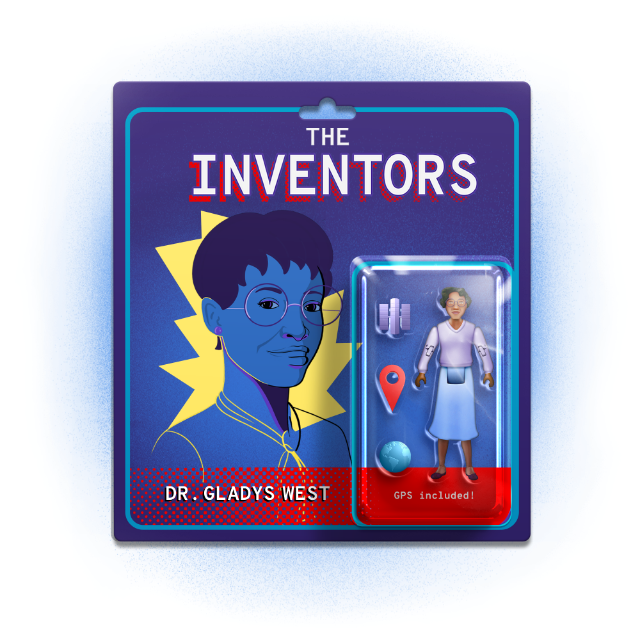

Subscribe to the podcast to receive new episodes as soon as we release them
Season 6, Episode 2
Dr. Gladys West: The Mathematician Who Reshaped Our World

Aristotle and Erastosthenes are big names in geodesy. They got pretty close to measuring the size of the Earth. But the woman who got it done? She grew up a farmer, dreaming of something bigger. And her work changed how we see the world.
Dr. Gladys West didn’t have much room for error in her quest for higher education. Marvin Jackson recounts the obstacles in her path—and the challenges she faced in her early career. Gavin Schrock traces how geodesy progressed before Dr. West, and how foundational her work was for the GPS systems that followed. Paul Ceruzzi describes the state-of-the-art technology available at Dahlgren that helped Dr. West model the world. Todd Humphreys explains how that model, and the GPS systems that use it, support our way of life in more ways than we realize.
It’s an astounding story that may never have been told if it hadn’t been for Gwen James, Dr. West’s Alpha Kappa Alpha Sorority sister. She makes the case for telling these stories before they’re lost—because there are definitely more of them out there.
00:05 - Saron Yitbarek
Third Century BCE. In the Great Library of Alexandria, the Chief Librarian, Eratosthenes, is about to have his breakthrough. Eratosthenes is an astronomer, a historian, a poet, and right now he's a cartographer too. Using just the shadows cast by sticks in the sand and a few geographical records he discovered in his library, he has managed to calculate the circumference of the planet. Even though the ancient Greeks were unaware of whole continents, Eratosthenes’s calculations were off by less than 2%. The world, the whole world, had suddenly snapped into focus.
00:50 - Saron Yitbarek
The dream of building an accurate model of our planet, a complete picture of the whole world, may have begun more than 2,000 years ago, but it's still a dream we're pursuing today. In the ancient world, a good map meant more effective trade routes and better prospects for military campaigns. Today, our ability to measure every nook and cranny of the Earth's surface can lead to so much more. I'm Saron Yitbarek, and this is Command Line Heroes, an original podcast From Red Hat.
01:29 - Saron Yitbarek
All season we're tracking inventions and breakthroughs that were made possible by people who never quite got their due. Brilliant minds whose contributions were overlooked. This time we're zooming in on a mathematician who helped bring definition to the 197 million square miles that we call home. Gladys West was a pioneer in the field of geodesy. That's where scientists and mathematicians work to build more and more accurate models of the planet. That model is crucial to our daily lives. Because in helping to build that model, Gladys West didn't just show us what the mountains and oceans of planet earth look like.
02:16 - Saron Yitbarek
She gave us a way to find ourselves. Her work was crucial to the creation of GPS. It all begins with a young Black woman who is determined to find a place for herself in a world that wasn't necessarily looking for her. Dr. Gladys West, who is now 90 years old, spoke with me from her home in King George County, Virginia.
So what did your parents do for a living?
02:49 - Dr. Gladys West
Well, we were farmers. We were a poor family. The kids worked the farm during the summer and in the evenings. It was busy, so we had plenty of good food because everything was so fresh and everything from the garden. Our money crop was tobacco.
03:08 - Saron Yitbarek
Did you want to do farming when you grew up?
03:10 - Dr. Gladys West
No, not really. I had been on that farm long enough to know that that wasn't a favorite kind of a life for me. I wanted something different. I wanted to leave the farm. I wanted to be educated. I just felt that I needed to go somewhere where I could use my talents and I guess enjoy my life better than working on that farm.
03:37 - Saron Yitbarek
You mentioned that your family didn't have much money, but you did attend Virginia State College. What did it take for you to get in there and to pay for it?
03:46 - Dr. Gladys West
My parents would always say that they are making this field here just for Gladys to go to college, and then they're supposed to save that money from the income of that crop. But it always turned out to be that there were some other needs that came up, and they always used it. So we didn't have a lot of savings waiting for me to go to college. And then one day I heard that the State of Virginia was going to give two scholarships to two graduating seniors from high school, and they had to be first and second in their class.
04:29 - Dr. Gladys West
And I heard that, and right off, I just felt that I could earn one of those if I start working right now and work hard. So when I graduated, I did become first in my class. Life was just great after that. I knew I was going!
04:55 - Saron Yitbarek
Dr. West wasn't just going to college either. After graduating in 1952, she got a job teaching math at a segregated school. She saved her income, so she could return for a master's degree in mathematics at Virginia State University, a historically Black institution. Then destiny came knocking in 1956. She was invited to come work as a mathematician at the Naval Proving Ground at Dahlgren, an institution that had just been desegregated.
05:24 - Dr. Gladys West
Before, I had been in mostly a Black environment. Everybody was sort of compatible in that sense. And it wasn't blatant. We didn't have blatant discrimination, but there were things like maybe people stopping talking, being quiet when the Blacks walk in and that kind of thing. Maybe you didn't know too much about what was required for a promotion. Maybe that kind of detail wasn't told to you. We didn't have, like, a mentor to guide you and sort of lead you the way you should go for the best output.
06:11 - Marvin Jackson
There was always talk in the corridors of, when will these people fail? Are they going to make it?
06:19 - Saron Yitbarek
That's Marvin Jackson. He's the co-author of Gladys West's memoir, It Began with a Dream.
06:25 - Marvin Jackson
But the thing about it, they were so strong. Like she said, when she first went there, people would look at her. When she went to the ladies' room or something, it's like they saw a ghost. Her thing was, she was far from being a ghost. But she said that after a while, they got used to it, and it was just like anything else in life. Everybody got used to each other. And she said that they gained a lot of good friends at Dahlgren.
07:02 - Saron Yitbarek
West was the fourth Black person they ever hired, and the team being assembled there was about to tackle some of the 20th century's largest problems. Gladys West was suddenly a long way from the tobacco fields of her youth.
07:21 - News Report
1957, the world entered the space age. A multi-stage rocket took off from a launching site in Russia. Launched the world's first artificial satellite, called the Sputnik 1.
07:31 - Saron Yitbarek
October 4, 1957. Soon after Gladys West arrived at Dahlgren, the Russian satellite Sputnik began orbiting the Earth at an altitude of 359 miles. The United States, determined to keep up, launched its own satellite, Explorer, the following year. And as the colonization of outer space progressed, an entirely new field opened up for those mathematicians at Dahlgren.
07:59 - Gavin Schrock
Scientists had been waiting for a space-based Doppler signal.
08:03 - Saron Yitbarek
That's Gavin Schrock, a surveyor and also an editor at Geospatial World Magazine.
08:09 - Gavin Schrock
When Sputnik went up in 1957, within its first couple of orbits, John Hopkins University researchers were getting the Doppler effect. The shift as the signal is coming towards you, it's sort of one pitch. And when it's going away from you, it's another. And with that difference, they're able to determine a position on the earth relative to the satellite and the position of the satellite relative to the earth.
08:39 - Saron Yitbarek
Scientists had realized that if you track a satellite carefully from the surface of the earth, and you applied the Doppler effect to your receiver, you could actually locate where you were on earth. By tracking satellites, you could find yourself. Suddenly our ability to find our place in the world grew infinitely finer. Soon, the Department of Defense had a number of satellite-based navigation systems. The Navy has something called Timation. The Air Force had Program 621B. The Army had SECOR.
09:17 - Saron Yitbarek
But what was missing was a single coordinated system that everyone could use. After many political wranglings within the military, a man named Bradford Parkinson assembled some of the country's top minds at the Pentagon for a weekend meeting in 1973. There, the master plan for a new global positioning system, GPS, was brought together, including key concepts like a passive one-way, four-dimensional user position. That meant an infinite number of users could conceivably access the system when it was finished.
09:55 - Saron Yitbarek
The work was going to be way more intense and involved than what Eratosthenes could do with his sticks in the sand. Gladys West and her team would be asked to deliver next-level precision. Schrock explains:
10:09 - Gavin Schrock
In the ancient eras, the math was actually pretty simple. Just working out some angles, some trigonometry. Where things really took off was in the 18th century. There was a geodesic mission to the equator, the French and Spanish one, in 1736. They were determined to measure the true length of two degrees of longitude. Very precise navigation was not going to be possible until they figured this out. There were too many discrepancies. Navigation at the time with the sextant and the clock was good, but that mission proved a lot of things.
10:49 - Gavin Schrock
For the first time, we had a rough shape of the earth, and they had a pretty good idea of how a Ellipsoid could be computed, one of those egg-shaped models to fit over the earth. This is starting to get towards the kind of math that Dr. West would have to do, but it was, I don't know, maybe 5% as complex as the stuff that Dr. West would have had to do.
11:17 - Saron Yitbarek
To make a GPS system work properly, you need to perfect that model of the earth. You have to build a kind of imaginary shell that fits over the infinitely rough reality of the planet. To build that model, though, an enormous amount of calculations had to be managed first.
11:37 - Gavin Schrock
The earth is a bumpy potato. Everybody knows that. That's fine. But how to correlate something like an elevation or a sea level on that is quite a bit more complicated, because elevation is a function more of the gravity, the mass of that bumpy earth, and how that affects which way the water flows. So you can have a spot that's sea level in one part of the earth, and it's actually many hundreds of meters above or below sea level in another part of the earth.
12:07 - Saron Yitbarek
West's calculations at Dahlgren had to accommodate such complications. And in doing so, she helped build that finer geodesy, that finer model of the earth.
12:17 - Gavin Schrock
So geodesy was fundamental to GPS in ways that people don't really realize, and it was a lot of hard work to pull it off. To be able to get GPS to be able to measure, initially they just wanted plus or minus 10 meters, was the charter for the US Air Force. If you want it to measure to a meter, or nowadays because the geodesy is so well-refined, you can measure to the centimeter and even over a time series, say structural monitoring, down to millimeters. But to pull this off, you had to refine the geodesy.
12:54 - Gavin Schrock
You needed this very perfected model of not only the shape of the earth, but the earth's gravity and the correlation between the two.
13:03 - Saron Yitbarek
Schrock describes a positive feedback loop where GPS tech grew more and more sophisticated, thanks to the refinement of that model Gladys West was working on.
13:13 - Gavin Schrock
They were taking satellite-based observations and turning it into a refined model of the earth that would in turn improve the satellite-based systems. GPS would have been pretty useless without it. It was great that there were all of these wonderful people that kept getting all these awards for building the GPS system, but it wasn't going to be any good. It was like building the record player without the vinyl to run on it. You couldn't have a great GPS system without the geodetic foundation. That's why folks that are sort of into the esoterics of GPS see Dr. West as a real hero.
13:55 - Saron Yitbarek
But making the model itself proved so incredibly complicated that even someone like West would need a little help, and help had arrived at exactly the right moment in the form of the world's first supercomputers.
14:11 - Paul Ceruzzi
I'm Paul Ceruzzi. I am a retired curator at the Smithsonian Institution's National Air and Space Museum.
14:19 - Saron Yitbarek
We contacted Ceruzzi who literally wrote the book on GPS to find out about the tech Gladys West was able to work with at Dahlgren.
14:28 - Paul Ceruzzi
She was in charge of a computing activity that took that data from tracking satellites in space and tracked the anomalies, the variations in their orbits, which she then was able to translate into an understanding of what was causing those variations, namely the variations of the earth's gravity. So her accomplishment was really the translation of this data into a knowledge of the earth's shape, which of course, is very important not just for GPS, but for lots of other things.
15:06 - Paul Ceruzzi
She worked using these sophisticated IBM computers. And also in the 1950s and '60s, Dahlgren was one of the world's computing centers, believe it or not. Some of the top computers in the world were located there.
15:25 - Saron Yitbarek
Increasingly precise models of the earth could be made because the mathematicians at Dahlgren had access to IBM supercomputers. And in 1962, the 7030 had arrived, nicknamed Stretch. It was also used at Los Alamos in the race toward atomic development. Stretch was capable of computing at an unprecedented scale, because it was IBM's first transistorized supercomputer. Older versions had used vacuum tubes. Stretch could handle half-a-million instructions per second. And at 60 components, cost about US$70 million in today's dollars.
16:07 - Saron Yitbarek
Wow. Yet by our standards, Stretch wasn't that super. Gavin Schrock gives us a sense of how arduous that work really was. Here he describes their work determining the orbits of Pluto and Neptune on another early supercomputer, the NORC.
16:24 - Gavin Schrock
Naval Ordinance Research Calculator or NORC, it entailed five billion calculations and about a hundred hours of processing time. This could be done on your phone in a few seconds, but it can only be done because the processes that go into it, all of the computations and the nuances between them to prove each other out have been proven over decades. The early pioneers were the ones that went, "Okay, we can teach this computer to do a simple calculation, a very straightforward calculation. But what about when putting in all these other variables?"
17:01 - Gavin Schrock
So they had to do everything by hand to make sure that it would work as they put it into the computer.
17:10 - Saron Yitbarek
Gladys West and others at Dahlgren were in fact often using slide rules to manually do their calculations, and these were then incorporated into decks of punch cards they handed over to punch operators who had access to the supercomputers. Paul Ceruzzi.
17:27 - Paul Ceruzzi
For security reasons, only very few people were allowed in that room because it's a multimillion dollar installation. You didn't want somebody pressing the wrong button or something like that. That's the way it was. You would submit your program. You'd wait. It would rerun, and then that would come, sometimes hours or a day later, as a printout, a big giant piece of fan-folded paper, uppercase only, a big giant printer. It made a horrendous racket, but it was actually a good sound. When you heard that racket, you knew that the computer was working and giving you an answer.
18:02 - Saron Yitbarek
Punch card by punch card, Gladys West and the rest of the Dahlgren mathematicians were using the Stretch supercomputer to painstakingly hone their models of the geoid.
18:14 - Gavin Schrock
They didn't have a second computer or a second set of people coming up with alternate algorithms to prove it out. They had to get right the first time. She says her primary job was not thinking about all of these future end uses, it was getting it right. So at the time it was doing it by hand on one hand with a pen and paper and running it through the computer and seeing how it worked out.
18:45 - Saron Yitbarek
By the early 1980s, the GPS project was finally taking shape. This would be a universal and truly global positioning system that would redefine the way we orient ourselves to the planet. But even then, skeptics were complaining about its expense. Why build something new when separate disjointed systems already existed? But those arguments went up in smoke in the fall of 1983.
19:15 - Audio
My fellow Americans, I'm coming before you tonight about the Korean Airline massacre. This crime against humanity must never be forgotten.
19:22 - Paul Ceruzzi
A Korean airliner was shot down by the Soviet Union who mistook it for an American spy plane. The Korean airliner had strayed off course. It was using another navigation system, so-called inertial navigation. There was some issue about misreading of the data. It was one of the lowest points, or most dangerous points, of the Cold War between the US and the Soviet Union.
19:50 - Saron Yitbarek
And in the midst of that disaster came a new push for GPS.
19:54 - Paul Ceruzzi
Then President Reagan made an announcement that said that this GPS system, which was then under development, would be made available worldwide for navigation purposes. That took the planners of GPS a little bit by surprise because it wasn't quite ready yet, but it also put the consciousness of this system in the public's eye. Everybody now realized that there was this system. If and when it got finished, it would be very useful. It would save lives. It was worth the money.
20:26 - Paul Ceruzzi
So all of those debates over the funding, which were raging in the Pentagon and in Congress, those debates went away.
20:35 - Saron Yitbarek
Finally, there was full support for GPS. By the early 1990s, this enormous project, which would redefine our planet and our position on that planet, was finished at last.
20:49 - Paul Ceruzzi
And it has worked exactly as planned or better, really better than planned.
21:01 - Saron Yitbarek
At the time, Gladys West may not have guessed how great of an impact her work at Dahlgren would eventually have. But then again, nobody could have imagined how GPS was going to influence, guide, and shape our lives.
21:16 - Todd Humphreys
I am Todd Humphreys, an associate professor of aerospace engineering at the University of Texas at Austin.
21:23 - Saron Yitbarek
We went to Todd Humphreys for a look at all the ways West's work is still evolving. It's become so entrenched that life as we know it would be impossible without it. Economists around the world have gamed out what it would look like to go a week without GPS or even a day.
21:42 - Todd Humphreys
What they showed was that a prolonged duration would have trillions of dollars of damage to the economy. So going without this wonderful resource that rains down from medium earth orbit would really cripple our economy, and it shows how dependent and how grateful we are for this resource, because we really do benefit from it in a significant way.
22:09 - Saron Yitbarek
As we've grown more dependent, we've also fine tuned the earlier work from Dahlgren and building that more and more perfect model of the planet allows for finer applications.
22:21 - Todd Humphreys
If you were able to take a look at a graph of the errors that GPS has, and its solution at the surface of the earth since the time it became fully operational, around 1995 to today in 2020, you'd be very pleased to see how it's improved every year. Many of those improvements have to do with better orbital modeling. Geodesy aids in the improved orbital modeling that is contributing to every year better, more accurate GPS. I think we've basically flattened out.
23:00 - Todd Humphreys
We really can't model the gravitational field of the earth or the earth's shape to any higher resolution that would provide better accuracy for GPS.
23:12 - Saron Yitbarek
Today, GPS enables the entire rideshare industry. It supercharges our personal wayfinding. It's how every Amazon delivery is tracked around the world. It's estimated that the US alone gains more than $66 billion annually in raw economic improvements thanks to GPS.
23:34 - Todd Humphreys
That is an amazing benefit to each person living today, and we owe that to the pioneers like Gladys West and other people who contributed to GPS in all of their multifaceted ways. We are just basking in the blessings of having this great resource.
24:01 - Gwen James
My name is Gwen James. Dr. West and I belong to the same sorority, Alpha Kappa Alpha Sorority Incorporated.
24:14 - Saron Yitbarek
Gwen James was at a sorority meeting honoring older members when Gladys West's brief bio was read aloud.
24:21 - Gwen James
After the meeting, I went to her and I said, "Dr. West, I had no idea that you worked on the GPS. How amazing it is. There's no segment of our society that doesn't use the GPS." And I said to her, I said, "Well, would you mind if I try to get your story told?" And her response to me was, "Well, you think it's worth telling?" And I'm like, "Uh, yes. I certainly do think it's worth telling."
24:57 - Saron Yitbarek
James took the story to a newspaper journalist who wrote an article that got picked up nationally by the Associated Press. For James, this was long overdue credit, but she's not very surprised that it took so long.
25:12 - Gwen James
Keep in mind, it was the time when Black people and white people couldn't even go to the bathroom together. They couldn't use the same water fountain. For other people to take credit, for white people to take credit for that work, that was just the way it was. I mean, that was just the way the country was at that time.
25:39 - Saron Yitbarek
James believes that the more we dig into the history of Black inventors, Black mathematicians and scientists, the more we'll discover that heroes like Gladys West aren't so rare after all. They were always there, ready to be seen.
25:55 - Gwen James
Dr. West and folks like Katherine Johnson and some of the other hidden figures, they're really not anomalies. These men and women, back in days of segregation, days of Jim Crow, they've always had the intelligence. They always had the wherewithal. They just never received credit for their work because of racism. So had not someone just like I did with Dr. West, someone found out about Katherine Johnson and the other hidden figures, and thought their story was amazing and couldn't believe that no one knew, there are a lot of people around, men and women of color, that never got credit for the work that they did in engineering, in mathematics, in the sciences. So they're not anomalies.
27:01 - Saron Yitbarek
They're not anomalies at all. And West's accomplishments speak to the potential in any number of little girls before the civil rights movement, fighting their way onto the stage. Author Marvin Jackson.
27:13 - Marvin Jackson
I call her—my term is “recently recognized,” because she basically was always there, but now she's being recognized for all the hard work she did. I just think that it's important that we recognize people like Gladys and the contributions they made. I mean, and they did it at an even more difficult time than now. And so that should give young girls a reason to be more positive about doing these types of things, because it will be a lot easier for them now to do these things than when it was for Gladys.
28:00 - Saron Yitbarek
Later, West would build on early GPS breakthroughs by contributing to the Geosat Satellite Mission in the 1980s, where she helped determine the height of oceans down to the inch. And even when her 42-year career had ended, she remained a fanatic for precision and for excellence at levels that most of us never even contemplate. After retiring in 1998, West went on to get her doctor of philosophy degree in public administration at the age of 70. She was the only Black woman in her program. And just this last summer, she published her memoir entitled, It Began With a Dream.
28:43 - Saron Yitbarek
Here's a bit more of our conversation. In 2018, the Air Force Space Command made you the first Black woman inducted into the Pioneer Hall of Fame. What did that honor mean to you?
28:57 - Dr. Gladys West
Oh yeah. Oh yeah, that was fantastic. I mean, it was unbelievable. You're walking around for a few days wondering who you are.
29:12 - Saron Yitbarek
So do you feel it should have come sooner?
29:15 - Dr. Gladys West
I think that this is about the right time. I can't think of a better time, I’m sort of at the end. You don't want to wait too late so you can enjoy it. So now I can get to sort of enjoy what has happened to me.
29:33 - Saron Yitbarek
So based on what you've seen over the past 89 years, do you believe the culture in technology and science has evolved its attitude towards Black innovators?
29:42 - Dr. Gladys West
I've been thinking about this interval of time that has really passed over. And looking back at the real early times, taking folks’ inventions and ideas and all was sort of done without much shame, I guess. You just sort of do your thing and take credit for it.
30:03 - Saron Yitbarek
What advice or words of encouragement would you give to other Black technologists and scientists?
30:08 - Dr. Gladys West
I find that I had to work hard, and I had to not be discouraged, and treat others as you want to be treated. Set goals and work regardless of what somebody else is doing. Never give up and always be your best. And I guess just be yourself.
30:33 - Saron Yitbarek
Wise words.
30:44 - Saron Yitbarek
The mission to map the world and find our place in it didn't end with Gladys West, of course. Even as we put the finishing touches on this episode, the Chinese government finished launching its own constellation of satellites, powering their Baidu system, an alternative to GPS. Russia, meanwhile, has its own system too, GLONASS. And SpaceX has been launching satellites of their own, creating the Starlink constellation to provide a further GPS alternative.
31:16 - Saron Yitbarek
What started as a moonshot program that stretched the limits of modern math has become a necessity of modern life. Because, just like Gladys West herself, now that we found ourselves on this big bumpy potato of a world, we don't plan on ever going missing again. We discovered lots more fascinating material on Gladys West and the emergence of GPS. You can check it all out over at redhat.com/commandlineheroes.
31:51 - Saron Yitbarek
Command Line Heroes is an original podcast from Red Hat. Next time we introduce you to Mark Dean, the inventor who made the computer personal. I'm Saron Yitbarek. Keep on coding.